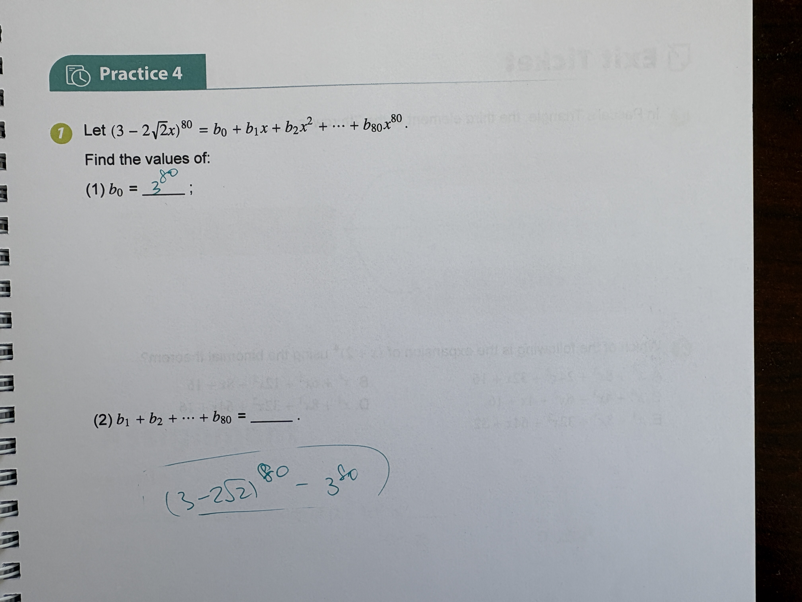

Algebra Quadratic & Polynomial Functions

Let $(3 - 2\sqrt{2}x)^{80} = b_0 + b_1x + b_2x^2 + \dots + b_{80}x^{80}$. Find the values of: (1) $b_0 = \underline{\quad\quad}$; (2) $b_1 + b_2 + \dots + b_{80} = \underline{\quad\quad}$.
(1) $3^{80}$; (2) $(3 - 2\sqrt{2})^{80} - 3^{80}$
(1) $3^{80}$; (2) $(3 - 2\sqrt{2})^{80} - 3^{80}$
To solve this problem, we use the properties of polynomial identities and binomial expansions. 1. To find the constant term $b_0$, we set $x = 0$ in the original identity. On the left side: $(3 - 2\sqrt{2}(0))^{80} = 3^{80}$. On the right side: $b_0 + b_1(0) + b_2(0)^2 + \dots = b_0$. Thus, $b_0 = 3^{80}$. 2. To find the sum of all coefficients, we set $x = 1$. On the left side: $(3 - 2\sqrt{2}(1))^{80} = (3 - 2\sqrt{2})^{80}$. On the right side: $b_0 + b_1 + b_2 + \dots + b_{80}$. So, $b_0 + b_1 + b_2 + \dots + b_{80} = (3 - 2\sqrt{2})^{80}$. 3. To find the sum $b_1 + b_2 + \dots + b_{80}$, we take the sum of all coefficients and subtract the first coefficient $b_0$. $b_1 + b_2 + \dots + b_{80} = (b_0 + b_1 + \dots + b_{80}) - b_0$ $b_1 + b_2 + \dots + b_{80} = (3 - 2\sqrt{2})^{80} - 3^{80}$. The student correctly derived the formulas, although they did not write the second answer directly on the provided blank line.